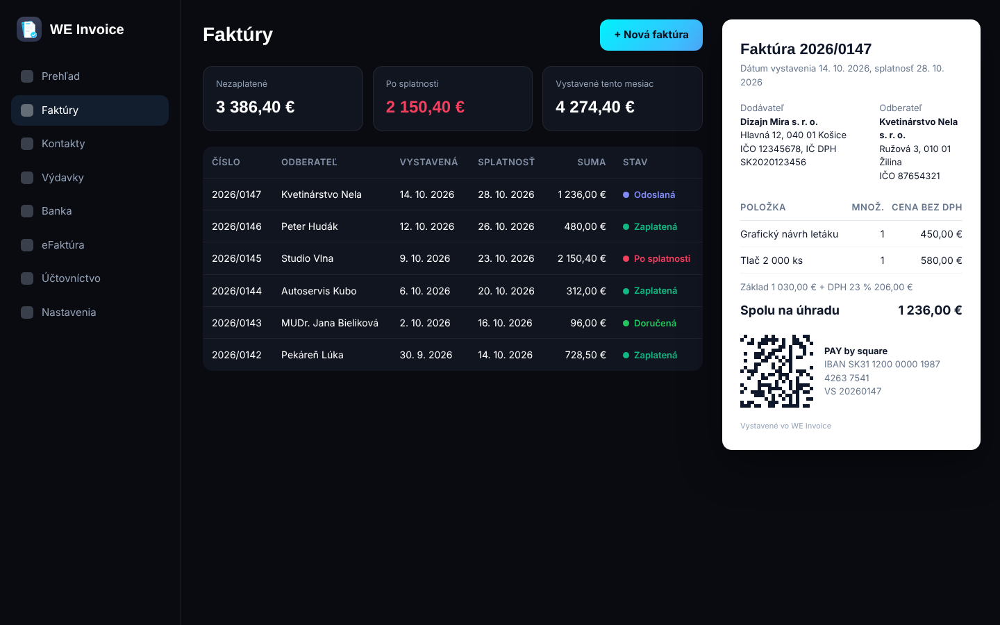

Invoicing and e-invoicing, free. Genuinely free.
Invoices, e-invoicing via Peppol, bank imports, payment reminders, expenses, VAT filings and single-entry bookkeeping for sole traders and small businesses in Slovakia and the Czech Republic. No sign-up, no limits and no paid plans. Your data is encrypted in your own Google Drive, not on someone else's server. Open source under the MIT licence.

It has almost no running costs: your data is in your Google Drive, the site runs on GitHub and you pay for e-invoicing directly to your provider. For White Eagles the app is a showcase of its work and a way to reach small business owners.
Encrypted on your device and in your Google Drive. The White Eagles server is just a gateway to e-invoicing providers and registers; it stores nothing.
Yes, every business in Slovakia, including non-VAT payers. WE Invoice receives them in full, every line included, through a provider where receiving is often free.
No. It prepares the groundwork and exports; responsibility for tax documents stays with you or your accountant.